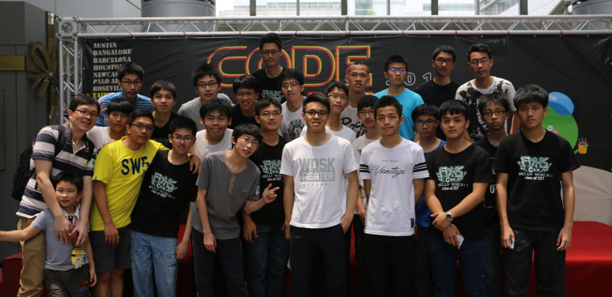

2016夏天，復旦程式設計班的線上教學系統上線了。為了讓同學可以更加善用多樣的網路資源，我們決定把上課的內容錄製成影片，讓希望可以加快進度，或者希望可以複習過去課程的同學，擁有一個自主學習的平台。同時，也希望因為各式因素無法加入我們陣容的同學們，也能因此而受惠。歡迎所有的同學，不限時空，適性學習，讓自己程式設計的夢想，化為實際行動，一起來學習、討論、切磋，我們一同讓學習程式，隨時，隨地，隨時開始。
© Copyright Eugene Y.C Tsai C++ 2016